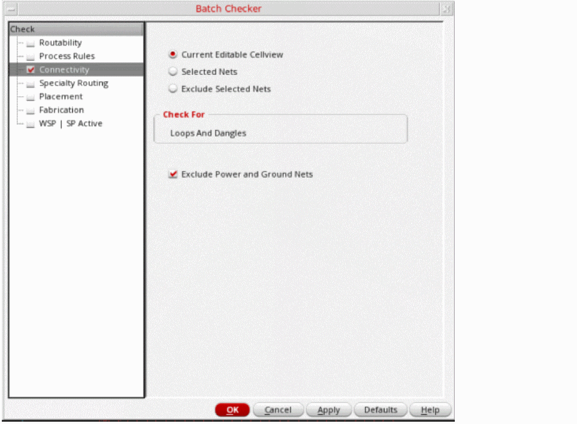

Checking Connectivity Using Batch Checker
The connectivity verification can be limited to specific set of violation checking. You can check for the following:
- Current cellview
- A selected set of nets
- Exclude selected nets
- Loops and dangling wires
- Exclude power and ground nets
To perform connectivity check on a design:
-
Select the Connectivity option. The connectivity checks are displayed in the right panel of the form as shown in the following figure.
 - From the Scope group box, select:
- The Check For group box checks for the dangling wires and wires with loops.
- The Filter Options group box allows you to choose whether or not to check cellview for shorts and opens that involve power and ground nets.
Related Topics
Checking Routability Using Batch Checker
Checking Connectivity Using Batch Checker
Checking Specialty Routing Using Batch Checker
Checking Fabrication Using Batch Checker
Checking WSP | SP Active Using Batch Checker
Return to top